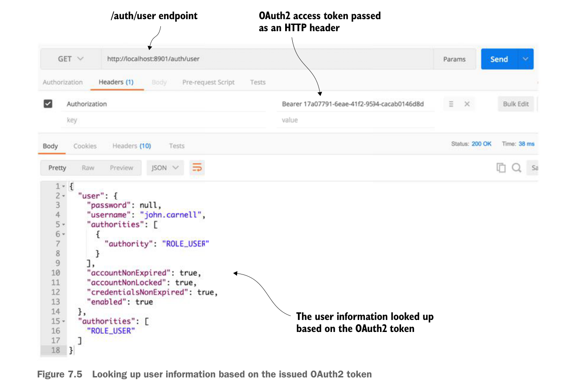

refresh_token—Contains a token that can be presented back to the OAuth2 server to reissue a token after it has been expired.expires_in—This is the number of seconds before the OAuth2 access token expires. The default value for authorization token expiration in Spring is 12 hours.Scope—The scope that this OAuth2 token is valid for.
Now that you have a valid OAuth2 access token, we can use the /auth/user endpoint that you created in your authentication service to retrieve information about the user associated with the token. Later in the chapter, any services that are going to be protected resources will call the authentication service’s /auth/user endpoint to validate the token and retrieve the user information.
Figure 7.5 shows what the results would be if you called the /auth/user endpoint. As you look at figure 7.5, notice how the OAuth2 access token is passed in as an HTTP header.

Looking up user information based on the issued OAuth2 token
In figure 7.5 you’re issuing a HTTP GET against the /auth/user endpoint. However, any time you call an OAuth2 protected endpoint (including the OAuth2 /auth/user endpoint) you need to pass along the OAuth2 access token. To do this, always